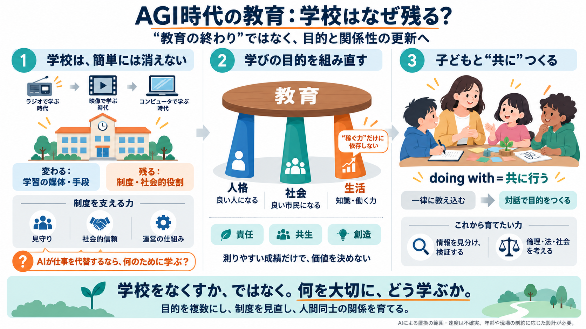

AI の社会的影響と教育の転換
識、スキル、態度・価値観を育成できる。本論文では、無償の教育教材 を提供する「aiEDU JAPAN」プロジェクトなどの具体的な取り組みを 概説し、AI 時代の要求に応えるための教育の将来の方向性を形作る上 でのその重要性を論じる。 1．は…

技術が教育を置き換えるという予測は繰り返し外れてきました。では子どもには、AGI時代に何を教えるべきなのでしょうか。
AIが知的な作業を代替するなら、「学んで働く」という中核が揺らぐ可能性があります。だからこそ「学校が消える／教育が不要になる」と単純化するのが危険です。
エジソンの「教員が機械に取って代わられる」という類の見通しは、繰り返し裏切られてきました。ラジオ、映画、インターネットの登場後も、学校は制度として生き残りました。
教育の目的は単一ではなく、複数の柱がテーブルを支えています。AGIで「稼ぐ力」が揺らぐなら、他の柱を強めるか、新しい柱が要ります。
学校が残るのは、「宗教や理念」が理由で制度が成立しても、それが消えてもなお続くからです。寄付金、社会的威信、子どもの見守りといった“継続の力”が働きます。
作者にとって決定的なのは、「稼げること」が揺らぎ始めた感覚です。もしAIが“貢献（contribution）”を奪うなら、教育の中核も再定義が必要になります。
Postmanが提案する教育の“新しい目的”は、進歩や経済だけに寄らない視点です。たとえば Spaceship Earth、The American Experiment、The World Makers などが挙げられます。
JobsやGates、Einsteinのような“学校の評価に収まらない成功”の例がある一方、AIによって成功のロジック自体が揺らぎ得ます。するとゴール設計も更新が必要になります。
「媒体はメッセージである」ため、教え方や形式そのものが意味を持ちます。カリキュラム以前に、関係性の中で教育の価値が形になります。
Alfie Kohnの考えにより、先生は子どもを“対象（モノ）”として扱うのではなく、人間として“共に行う（doing with）”べきだとされます。子どもと一緒に教育の目的を共同で作る姿勢が誠実です。
教育は“終わり”ではなく、目的の再設計と関係性の再構築が中心テーマになります。AGIが進んでも、人間の関わりが教育の核であり続ける可能性は高いです。
この記事の強みは、AGIの不安を「教育の終わり」ではなく「目的と関係性の更新」へ変換した点です。一方で、因果（何がどれだけ置換されるか）や制度摩擦への具体は薄く、追加の材料が必要です。
Web検索結果では、生成AIの普及により偽情報、批判的思考、雇用構造のリスクが教育へ波及する点が強調されています。方向性として AIリテラシー（情報の見分け）やELSI志向（倫理・法・社会）の学習が補完材料になります。
以下は提示された要約文および補完情報に基づく“手がかり”です。詳細な一次資料は各見出しに従って辿ってください。
識、スキル、態度・価値観を育成できる。本論文では、無償の教育教材 を提供する「aiEDU JAPAN」プロジェクトなどの具体的な取り組みを 概説し、AI 時代の要求に応えるための教育の将来の方向性を形作る上 でのその重要性を論じる。 1．は…
1. はじめに ・研究の背景と目的 本研究は、多摩大学大学院における教育プログラムが学生のキャリアアップに与 える影響に焦点を当てています。 現代社会において、 高度な教育はキャリア形成に おいて重要な役割を果たしており、 特に大学院教育は…
✓画像生成やテキスト生成を使い、画家や漫画家・小説家になることも可能 • 生成AIが生み出す職種ではないが、障害者・高齢者などが生成AIにより労働参加機会が拡大していく ‒ 対話型AIや音声認識技術を生かすことで、在宅で労働参加しやすくなる…
意識するしないにかかわらず，AI とともに生きていかざるを得ない， これまでに経験したことのな い状況を迎えている。 AI 時代とは何か。厳密な定義はないが， 一般的には人工知能 （AI） 技術が社会の隅々まで浸透し， 仕事の自動化，効率化…
"生成AI" は今後数年程度で既存ビジネスを根本から覆すゲームチェンジャーとなる可能性 革新的なテクノロジーの全体像 Source: BCG分析; MIT Tech Review; Gartner; ThoughtWorksより 大規模化・…